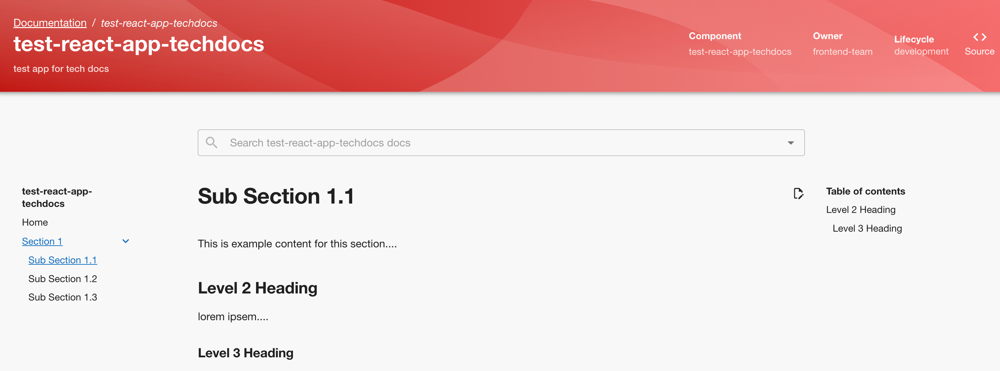
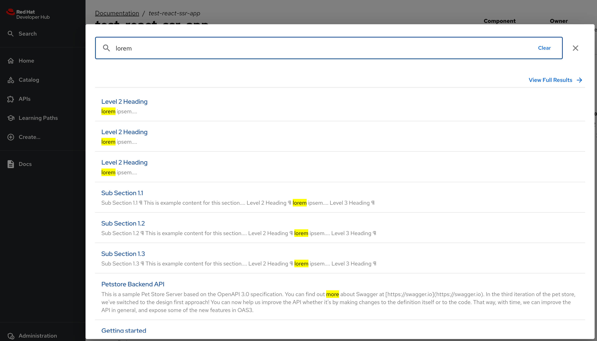

TechDocs and Search
You learnt about the TechDocs feature of RHDH in the first introductory course of the learning path. In this section, you will get hands-on experience with creating and rendering technical documentation for your catalog components.
Writing TechDocs Using Markdown
TechDocs uses the popular MkDocs library to generate documentation for your applications. You write markdown files (.md file extension) alongside your application’s source code, and store either in the same repository where you maintain the application, or an external repository which can then be referenced in your catalog YAML files.
Your raw plain text source markdown files are then converted to HTML, and then displayed as HTML in the RHDH web UI. There are several ways to configure how RHDH fetches, generates and publishes documents.
TechDocs Concepts and Terminology
The following are the important components of TechDocs:
- Preparer
-
The Preparer gets the source markdown files from a Git repository and sends it to the generator for further processing.
- Generator
-
The generator uses the raw markdown files input and converts it to HTML. The RHDH container has an in-built version of MkDocs packaged inside it.
- Publisher
-
The publisher stores the generated HTML files either locally on the RHDH container file system, or in external cloud storage (AWS S3, GCP Cloud Storage, Azure Blob etc).
- Builder
-
Builders are closely linked to the generator stage and typically offer multiple ways to build the markdown content to HTML. By default, RHDH uses a locally installed builder to generate the HTML files. You can also configure an external CI/CD workflow to fetch the markdown source, build the HTML externally, and publish the generated HTML to external storage. RHDH can then be configured to fetch the generated HTML files from external storage.
By default, RHDH is configured to use an "all local" solution, that is, generator, builder and publisher are all run locally and the HTML is stored in the container file system.
The following diagram illustrates an "all local" configuration of TechDocs:
-
When a client requests documentation for a component, the component ID is sent to the RHDH backend API. The backend API fetches the raw markdown source from a Git repository where the documentation is maintained.
-
The RHDH backend converts the raw markdown to HTML and publishes it to the local file system inside the container.
-
The client is then sent the generated HTML files from local file system storage. RHDH intelligently caches the generated HTML files so that subsequent requests to documentation are faster.
The "all local" approach is recommended only for small sized installations of RHDH with a few components. This approach will not scale to medium sized and large installations with hundreds or thousands of components. Recall that RHDH is running as a container, so this approach results is duplicating the HTML files and other processes across all the RHDH pods.
The following diagram illustrates the production recommended external publication and builder configuration of TechDocs:
-
A CI/CD workflow (GitHub Actions, Jenkins scripts etc) converts the markdown to HTML and stores the generated files in external cloud storage.
-
The backend registers the location of the HTML files for all the components where TechDocs is enabled.
-
When a client requests documentation for a component, the backend fetches the HTML and other static files from external storage and sends it to the client.
| The source document conversion and publication process happens completely detached (asynchronously) in the CI/CD workflow (in github actions, gitlab pipeline runners, etc.), irrespective of user requests for documentation. |
This is the recommended set up for production. CI/CD workflows convert the markdown to HTML asynchronously based on webhook triggers on the documentation repository and publish the generated HTML to external cloud storage. RHDH acts as a pure stateless engine and fetches the HTML for a component based on client request. This approach can scale to large installations with hundreds or thousands of components.
The following labs will cover these scenarios and give you hands-on experience with configuring and writing TechDocs.
Search
You do not have to configure anything extra for basic search functionality in RHDH. RHDH automatically indexes your documentation and enables rapid search functionality for your developers. For more complex search requirements for large installations, consult the documentation at https://backstage.io/docs/features/search for details.
Lab: Basic TechDocs in Local Mode
Enabling TechDocs in "all local" mode involves three major tasks:
-
Configure the Catalog YAML files
-
Configuring MkDocs
-
Enabling the TechDocs Plug-in
Steps
-
Explore the template file at https://github.com/RedHatQuickCourses/devhub-qc-apps/blob/main/templates/react-ssr/skeleton/catalog-info.yaml. Note the
backstage.io/techdocs-refannotation that points to the root of the document sources relative to thecatalog-info.yamlfileapiVersion: backstage.io/v1alpha1 kind: Component metadata: ... annotations: ... backstage.io/techdocs-ref: dir:. (1) #backstage.io/techdocs-ref: url:https://github.com/org-name/repo-name (2) spec: type: website ...1 Location of document source. For MkDocs, a default folder called docsin the root of the repository contains the markdown source.2 If documentation is maintained in a separate repository, you can refer to the URL of the repository using "url:" prefix. -
Inspect the https://github.com/RedHatQuickCourses/devhub-qc-apps/blob/main/templates/react-ssr/skeleton/mkdocs.yml file. It contains the MkDocs configuration for the component.
site_name: ... site_description: ... plugins: - techdocs-core (1) nav: (2) - Home: index.md - Section 1: - Sub Section 1.1: section1/ss11.md - Sub Section 1.2: section1/ss12.md - Sub Section 1.3: section1/ss13.md1 Enable the techdocs-coreplugin2 Navigation structure of the documentation tree. The text before the ":" indicates the title of the navigation node and the text after it indicates the path to the file for a section. You can nest the section into sub-sections based on your layout needs -
The corresponding directory layout of the markdown source looks like the following:
repo_root/ docs/ section1/ ss11.md ss12.md ss13.md index.md catalog-info.yaml mkdocs.yml -
RHDH has already enabled the techdocs plugin by default for an "all local" configuration. The default plugin YAML file inside the container has the following configured:
... techdocs: (1) generator: runIn: local builder: local publisher: type: local1 Configure TechDocs for "all local" mode -
The TechDocs dynamic plugin is enabled by default. In case it is not enabled, ensure the following entries are added to the
dynamic-plugins-rhdh-localConfigMap:./dynamic-plugins/dist/backstage-plugin-techdocs ./dynamic-plugins/dist/backstage-plugin-techdocs-backend-dynamic
-
If you made any changes to the RHDH YAML configuration files, restart the RHDH pod from the
Topologyview. -
If you have not already done so, import the template file at https://github.com/RedHatQuickCourses/devhub-qc-apps/blob/main/templates/react-ssr/template.yaml which contains the TechDocs skeleton code for a simple React front end application.
-
Create a new application from the template and navigate to the component details page. The
View Techdocstab should now be enabled and opening it renders the documentation for this component based on yourmkdocs.yamlconfiguration.Figure 3. Rendered Documentation -
Click the
Searchbutton in the top left corner of the RHDH sidebar (in the RHDH home page). Enterloremin theSearch field, and observe that RHDH quickly presents you with a list of results where it found the term.Figure 4. Search Results
Optional Challenge Lab: Advanced TechDocs using External Generators and Publishers
The blog post at https://janus-idp.io/blog/2023/06/03/production-ready-techdocs provides detailed instructions on how to configure TechDocs to use an external builder and publisher, along with CI/CD workflow automation to rebuild the markdown source based on Git webhook triggers. Make changes to your configuration to get the TechDocs plugin working with this set up.
Credits for Lab: Jason Froehlich (https://github.com/jayfray12)